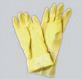
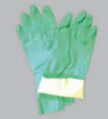
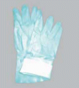
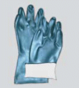
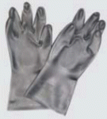
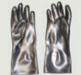
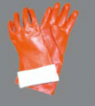
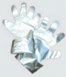

Das Angebot an unterschiedlichen Chemikalienschutzhandschuhen ist vielfältig, aber nicht jeder Schutzhandschuh ist für jeden Zweck geeignet und es gibt auch nicht den einen Chemikalienschutzhandschuh, der für alle Tätigkeiten mit allen Chemikalien geeignet ist.
2.1 Arten von Chemikalienschutzhandschuhen
Chemikalienschutzhandschuhe können aus unterschiedlichen Materialien bestehen, z.B. Kautschuk, Polyvinylchlorid, Polyethylen oder chemisch veredeltem Kautschuk und bieten daher unterschiedliche Eigenschaften und Fähigkeiten. Folgende Materialien für Schutzhandschuhe kommen beispielsweise in Betracht:
| Material | Beispiel | Eigenschaften |
| Latex (Natural Rubber – NR) |
 |
Dieses Material ist elastisch, gleichzeitig jedoch nur in geringerem Maße chemikalien- und alterungsbeständig. Durch die starke Dehnbarkeit ist ein hoher Tragekomfort gegeben, wobei die Fingerfertigkeit erhalten bleibt. |
| Nitril-Kautschuk (Nitril-Butyl-Rubber – NBR) |
 |
Dieses Material hat sehr gute Abrieb-, Stich-, Schnitt- und Reißfestigkeit. Schutzhandschuhe aus Nitril-Kautschuk werden von dünner, feinfühliger bis hin zur kräftigen Ausführung angeboten. Die Beschichtungen der verschiedenen Hersteller sind firmenspezifisch entwickelt und weisen dadurch unterschiedliche Eigenschaften auf. |
| Polyvinylchlorid (PVC) |
 |
Das Material ist wenig flexibel, weshalb bei der Produktion Weichmacher zugesetzt werden. Der Kontakt von PVC-Material mit Lösemitteln führt zu einem Auswaschen der Weichmacher und die Handschuhe werden spröde. Meist verfärben sich diese Handschuhe, wenn ein Kontakt zu Lösemitteln bestanden hat. |
| Polychloropren, Neopren (CR) |
 |
Schutzhandschuhe aus Polychloropren haben gute physikalische Eigenschaften (Abrieb, Weiterreißfestigkeit, …) und sind daher witterungs- und alterungsbeständiger als Handschuhe aus anderen Materialien. |
| Butylkautschuk (Butyl Rubber, Polyisobutylen Rubber – IIR, IBR) |
 |
Schutzhandschuhe aus Butylkautschuk werden meist in dickeren Materialschichten hergestellt und sind insofern recht schwer. Sie werden häufig in Verbindung mit schweren Chemikalienschutzanzügen verwendet. |
| Fluorkautschuk (FKM) |
 |
Schutzhandschuhe aus Fluorkautschuk haben einen weiten Anwendungsbereich. Sie werden in einem aufwändigen Verfahren hergestellt, so dass sie relativ teuer sind. |
| Polyvinylalkohol (PVA) |
 |
Schutzhandschuhe aus PVA haben einen eingeschränkten Anwendungsbereich, da das Handschuhmaterial wasserlöslich ist. Bei wasserfreien Lösemitteln kann zeitlich begrenzter Schutz erwartet werden. |
| Zweifache Materialmixe |
Über die dargestellten Varianten von Chemikalienschutzhandschuhen hinaus gibt es eine Vielzahl von Schutzhandschuhen aus Materialkombinationen. Diese werden häufig bei sehr hoher Beanspruchung (z.B. bei Chemikaliengemischen) eingesetzt. | |
| Mehrlagige Schutzhandschuhe (Laminate) |
 |
Solche Handschuhe werden aus mehreren Schichten unterschiedlicher Materialien zusammen geschweißt. Die Schweißnähte können reißen; die Beweglichkeit ist häufig eingeschränkt und der Tragekomfort weniger gut. |
Tabelle 2: Materialien für Schutzhandschuhe